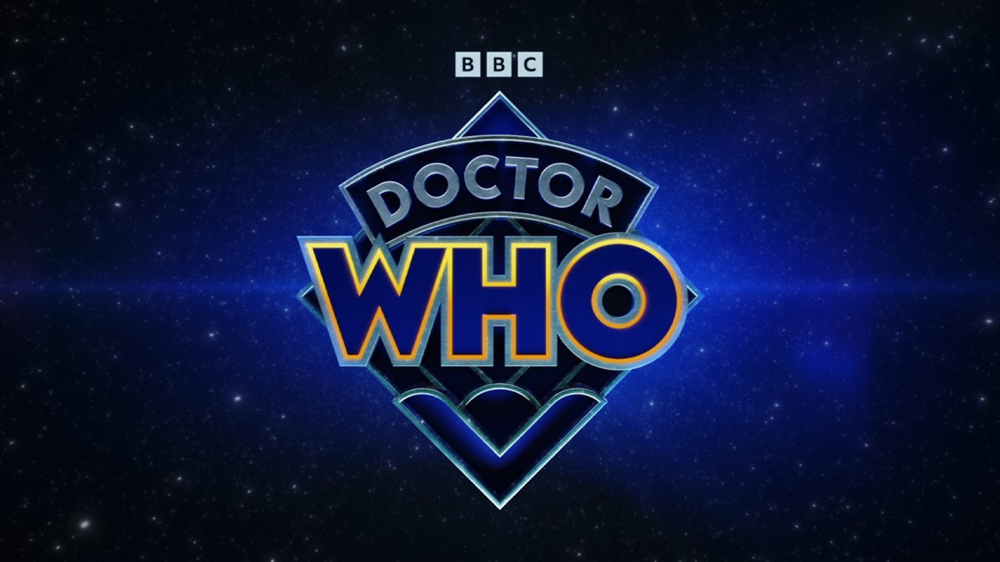

Doctor Who es una serie británica de ciencia ficción que comenzó en 1963 y sigue en emisión, siendo la más longeva de su género.
Trata sobre el Doctor, un extraterrestre de la raza de los Señores del Tiempo, que viaja a través del tiempo y el espacio en una nave llamada T.A.R.D.I.S (que parece una cabina de policía azul por fuera, pero es mucho más grande por dentro).
El Doctor suele viajar con compañeros humanos, ayudando a personas y civilizaciones, enfrentándose a monstruos, alienígenas y dilemas éticos, mientras explora el universo y el tiempo.
Cuando está herido de muerte, el Doctor puede regenerarse en un nuevo cuerpo y personalidad, lo que ha permitido que varios actores interpreten al personaje a lo largo de los años.